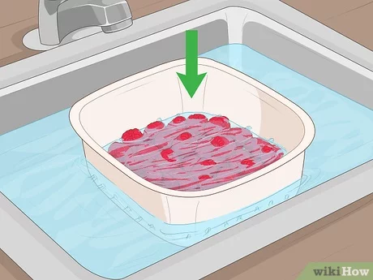
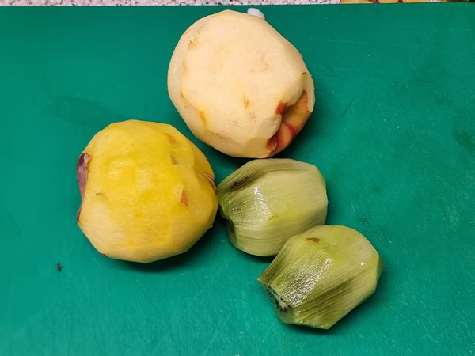
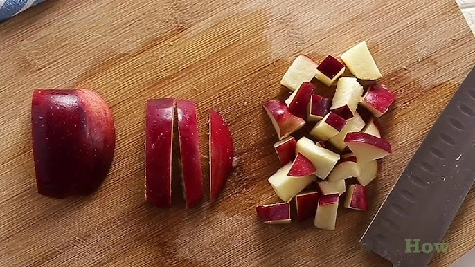
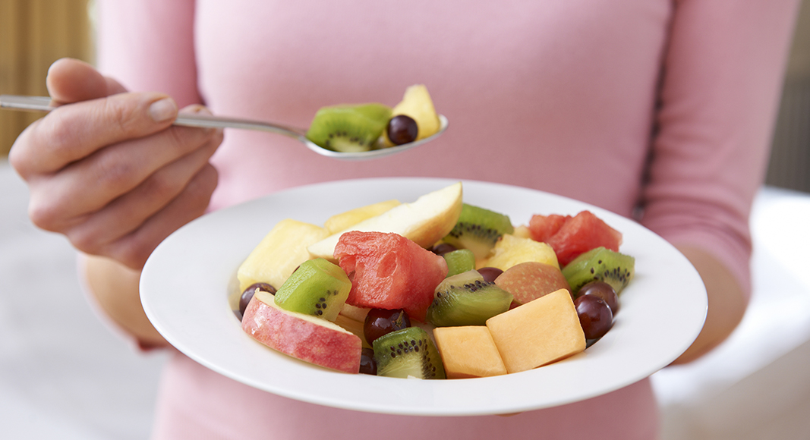

Postre

Ingridientes
-
1 manzana
-
1 melocotón
-
7 frambuesas
-
2 kiwis
Paso 1: Lavar las frambuesas
-
Cogeremos las 7 frambuesas y las lavaremos durante 5 minutos

Paso 2: Pelar melocoton y manzana
-
Cogeremos 1 manzana y la pelaremos, haremos lo mismo con el melocoton y con los 2 kiwis.

Paso 3: Trocear: Melocoton, kiwis y manzana
-
Ahora cortaremos en cubos la manzana, los 2 kiwis y el melocotón

Paso 4: Emplatar
-
Una vez cortado en cuadraditos la fruta mencionada anteriormente, ahora cogeremos un plato hondo y pondremos ahi la fruta cortada y las frambuesas. Y ya tendrimos un magnifico postre saludable.

Resultado final

Postre